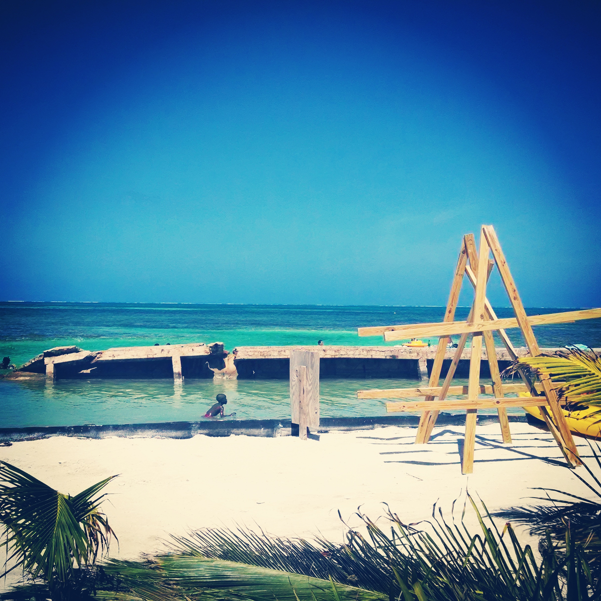
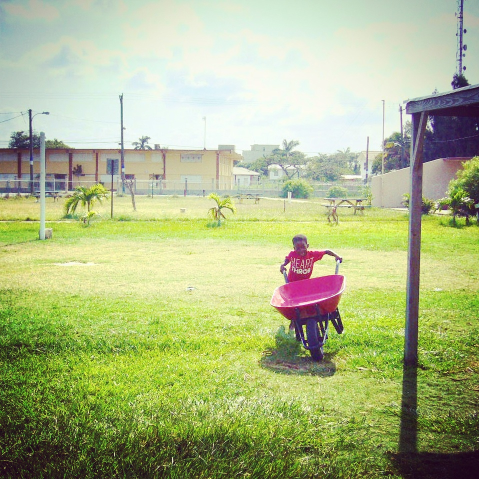
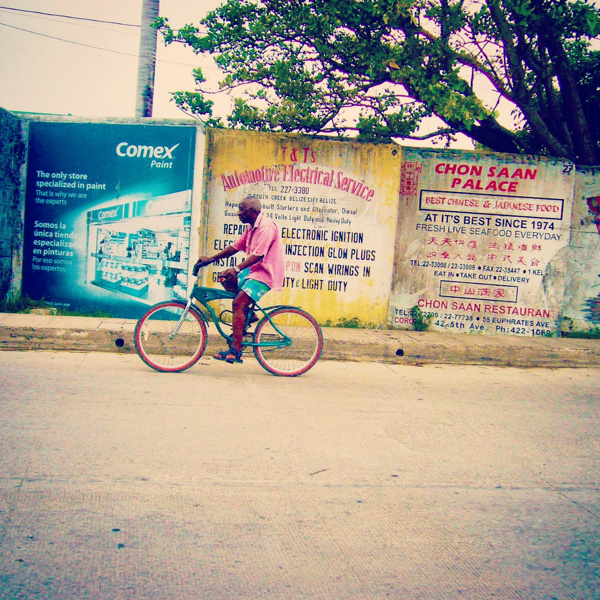
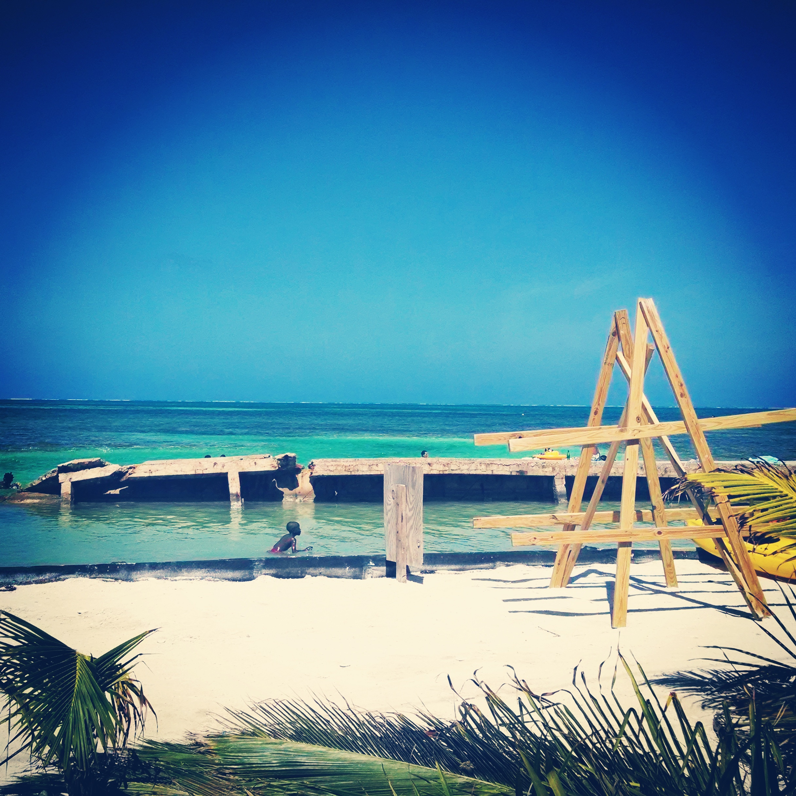
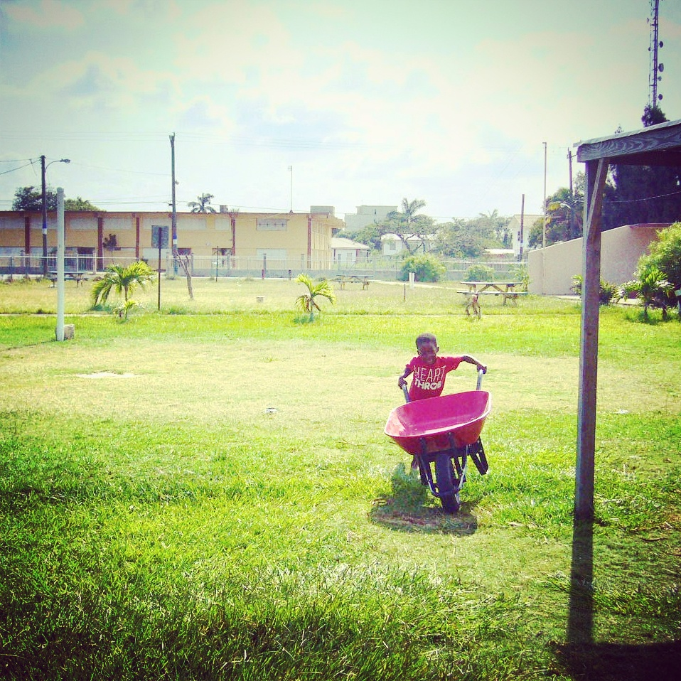
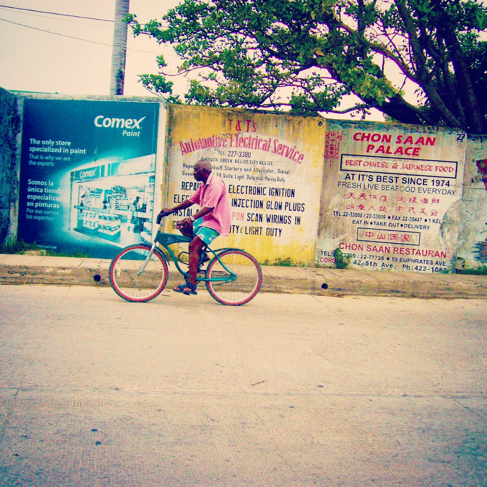

Belize \
Belize City / July.14
_The only country in Central America whose official language is English, though Belizean Creole and Spanish are also commonly spoken. Belize is bordered on the north by Mexico, to the south and west by Guatemala, and to the east by the Caribbean Sea. A population of 340,844, Belize has the lowest population density in Central America.
 




